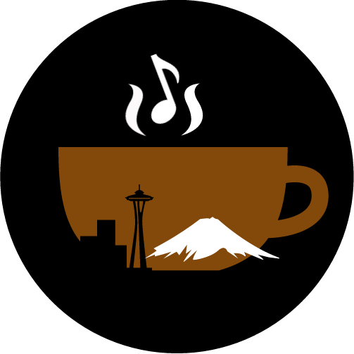

By Dustine Bowker
WDC, which refers to “Western District Convention,” could also stand for “Westerners Drinking Coffee,” since many attendees needed caffeine to stay energized throughout this year’s convention. Over the course of one weekend, Brothers and Sisters of the Western District of Kappa Kappa Psi and Tau Beta Sigma engaged in legislative revisions, jurisdiction, officer elections, and workshops to enhance chapter events and atmosphere.
We extend our congratulations to Mitch Mikuchonis and Sydney Dychiao, our newly-elected Western District Presidents for Kappa Kappa Psi and Tau Beta Sigma respectively, along with our own Si Si Ni, who was elected as WD Secretary-Treasurer of Kappa Kappa Psi, Jake Rocco who was elected as Member at Large of Kappa Kappa Psi, and Natalie Kimura, who was elected as Vice President of Membership of Tau Beta Sigma. We are confident that each of our newly-elected officers will thrive in their new roles, and we look forward to witnessing what each of them will accomplish this year.
Meanwhile, the Western District Council addressed changes to the Western District Joint Constitution. The following is a list of several of the 10 major revisions:
Section 4.3.1.2 now reads: “The Host Chapter of WDC must submit three proposed dates to the Western District Presidents no later than December 1st.”
Section 8.1 now reads: “Individuals or committees may submit proposed amendments in writing to the Jurisdiction Committee to be considered for inclusion in the District Constitution.”
Section 8.2 now reads: “If three-fourths (¾) of the votes cast by all eligible voting chapters of the district are favorable, the proposed amendment shall be declared adopted, and upon and after such adoption, it shall become operative and effective, at the conclusion of the Convention, unless otherwise noted.”
Section 8.3 now reads: “If the favorable vote on a proposed amendment is less than three-fourths (¾), yet there is a majority vote, the proposed amendment shall be tabled until the next Western District Convention.”
While the bulk of WDC was devoted to policy-making, we also took part in a variety of joint workshops, one of which was a ritual workshop in which we discussed and reflected on various aspects of ritual. Later on, we attended “Music Hour,” where we took part in either the Reading Band, Jazz Band, Guard Clinic, or Conducting Clinic. Finally, we had our awards banquet, fight song competition, and dance.
The two sleepless nights and large amounts of caffeine were worth the experience of attending WDC 2016. We look forward to next year’s WDC, where our collective coffee drinking will resume amidst another year of elections, legislative revisions, jurisdiction, and workshops.
